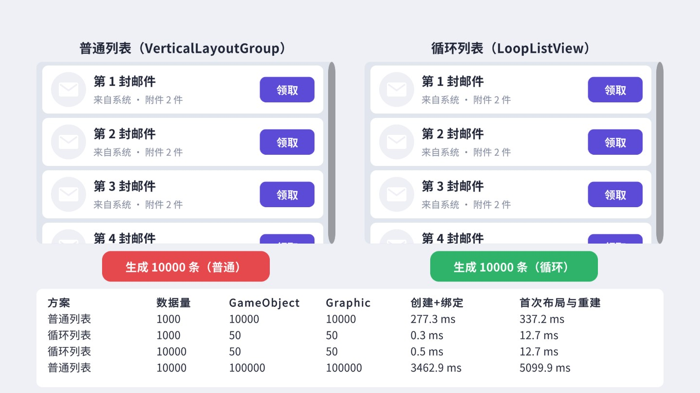
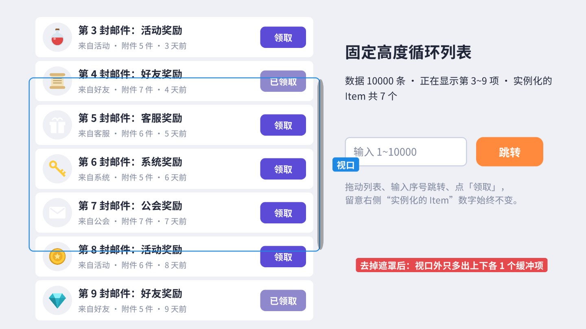
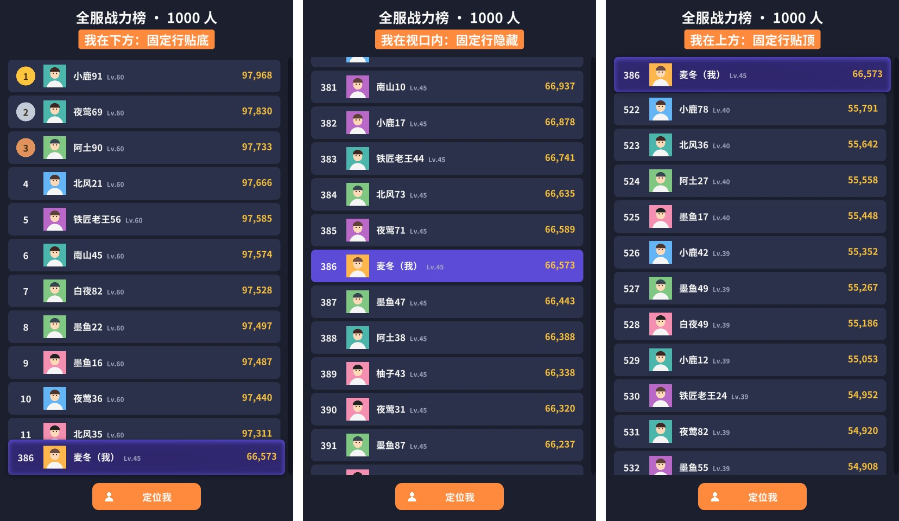

邮件、好友、排行榜、背包、聊天记录、商城……游戏界面里一半以上是列表。条目少的时候，第 9、10 章的 ScrollRect + LayoutGroup 就够了；条目一多，界面开始卡顿、打开要等好几秒、内存飙升。这一章先用实测数据说明一万条数据的列表为什么卡，然后实现真正的虚拟化循环列表（固定高度、可变高度、网格三种），最后用它做出聊天、背包、排行榜三个完整案例。
先做一个实验。左边是第 9、10 章的标准做法：ScrollRect 的 Content 上挂 VerticalLayoutGroup 和 ContentSizeFitter，每条数据 Instantiate 一个列表项；右边是本章要实现的循环列表 LoopListView。两边用完全相同的列表项模板（图标、标题、副标题、按钮），分别生成 1000 条和 10000 条数据，测量创建耗时、第一次 Canvas.ForceUpdateCanvases()（布局 + 网格重建）的耗时，以及 Content 下的 GameObject 数量：

| 方案 | 数据量 | GameObject | Graphic | 创建 + 绑定 | 首次布局与重建 |
|---|---|---|---|---|---|
| 普通列表 | 1000 | 10000 | 10000 | 277.3 ms | 337.2 ms |
| 普通列表 | 10000 | 100000 | 100000 | 3462.9 ms | 5099.9 ms |
| 循环列表 | 1000 | 50 | 50 | 0.3 ms | 12.7 ms |
| 循环列表 | 10000 | 50 | 50 | 0.5 ms | 12.7 ms |
数字很直观：普通列表的开销随数据量线性增长，一万条数据要创建十万个 GameObject，在一台很快的电脑上也要卡八秒多；循环列表无论多少条数据都只有 5 个列表项（视口里能看到 3～4 个，上下各多准备 1 个），耗时只有十几毫秒（主要是这 5 项的首次网格生成），而且和数据量无关。在手机上，普通列表的差距只会更大。同一台机器多次运行，耗时会有两三成的波动（作者几次批处理里普通列表 10000 条的首次布局在 4.7～5.1 秒之间），但数量级和对比关系是稳定的。你可以打开配套场景，在自己的设备上点两个按钮自测，结果会打印在场景底部和 Console 里。
细心的读者会发现每个列表项是 10 个 GameObject，而模板里明明只建了 8 个节点（根、高亮框、图标底、图标、标题、副标题、按钮、按钮文字）。多出来的两个是 TMP 自动生成的 TMP SubMeshUI 子对象：配套工程的中文字体是动态字体，字符多了之后会扩展出第二张图集，用到第二张图集里字形的文本就需要一个额外的子网格对象来绘制。这在大量文字的列表里很常见，也是普通列表开销中容易被忽视的一部分。
普通列表慢在哪里，可以拆成四笔账：
OnPopulateMesh。还有一笔账在表格里看不到：内存。每个 GameObject 和组件在原生层和托管层都有内存占用，十万个对象常驻会让低端手机的内存非常紧张；关闭界面时销毁它们又会产生大量需要回收的对象，下一次垃圾回收（GC）就可能带来一次明显的卡顿。循环列表的对象数量是常数，打开、关闭、滚动都几乎不产生新的内存分配，这一点在移动端往往比耗时更重要。
而屏幕上任何时刻能看到的只有几条。循环列表的思路就是：只为看得见的那几条创建对象。
一个常见的“折中方案”是：仍然为每条数据创建对象，但把视口外的 SetActive(false)。这能省掉看不见的元素的渲染和合批，却省不掉最贵的两笔——创建和内存。一万条数据仍然要创建十万个 GameObject，打开界面仍然要卡好几秒；而且隐藏的子物体在 LayoutGroup 里不参与布局（被忽略），Content 的高度会算错，滚动条跟着出错。另一个折中是“分批创建”：每帧创建 50 条，把卡顿摊到很多帧里，界面打开时不卡了，但几秒钟内列表是不完整的，内存占用也没有减少。这些方案都只是推迟问题，真正解决问题的是让对象数量和数据量脱钩。
虚拟化列表（Virtualized List，国内常叫“循环列表”“无限滚动列表”）把“数据”和“显示对象”分开：数据可以有一万条，显示对象只有视口能容纳的那么几个。滚动时，滚出视口的对象被回收，填上新数据后放到即将滚入视口的位置。用户看到的是一条连续的长列表，场景里实际上只有几个列表项在不断“换装”。
关键点有三个。第一，Content 的高度必须按全部数据计算，否则滚动条的长度和位置都不对，惯性滚动到底的手感也不对；但 Content 里并没有那么多子物体，所以不能用 LayoutGroup 和 ContentSizeFitter，位置和尺寸全部由代码计算。第二，位置要能快速反查：给定滚动位置，立刻知道第几项在视口顶部。固定高度时一次除法即可；可变高度时要用前缀和加二分查找（案例 18.2）。第三，缓冲区：视口上下各多准备一两项，快速滑动时新项来不及绑定也不会露出空白。
用一个“透视”实验验证一下：把列表视口上的 RectMask2D 去掉，视口外的东西就都能看见了。

目标：写一个基类，负责对象池、回收复用、与 ScrollRect 的联动、跳转；把“每项在哪、多高”留给子类，这样固定高度、可变高度、网格只需要各写几十行。
基类要求和 ScrollRect 挂在同一个物体上，Init 把 Content 的锚点设为顶部拉伸、轴心在顶部。这样 content.anchoredPosition.y 恰好就是“已经往下滚了多少”，0 是顶部，越往下越大，后面所有的计算都基于这个值。它在 OnEnable 里订阅 ScrollRect.onValueChanged：ScrollRect 在拖拽、惯性、弹性回弹时都会触发这个事件，每次触发就重新计算可见区间。
对外的接口只有几个：SetCount 设置数据条数（数据本身由使用者自己保存），onBind 回调负责把第 i 条数据显示到某个列表项上，Refresh / RefreshItem 在数据内容变化时重新绑定。列表组件完全不知道数据是什么类型——邮件、聊天消息、物品都可以，这让同一个组件能服务所有列表。
核心是 UpdateVisible：
这里有一个容易被忽略的优化：先回收、再复用、最后才隐藏。滚动一行时，顶部滚出去的那一项马上就会被用作底部滚进来的那一项。如果回收时立刻 SetActive(false)、复用时再 SetActive(true)，这个列表项下的每个 Graphic 都会走一遍 OnDisable/OnEnable，标脏、从 Canvas 注销再注册，白白多一轮重建。先把它放进池子而不隐藏，复用时直接改位置和数据，只有这一轮确实没用上的对象才隐藏。
另一个细节是对象池按“模板类型”分开：聊天列表有左气泡、右气泡、时间条三种模板，左气泡回收的对象不能拿去当右气泡用。基类用 m_TypeOf 记录每个对象来自哪个模板，m_Pools 按类型存放。
列表项是复用的，第 37 项用的对象上一刻可能还显示着第 3 项。onBind 里必须把这个列表项上所有会因数据而变化的东西全部重新赋值：文字、图标、颜色、按钮是否可点、选中框是否显示、红点是否显示……哪怕“大多数数据都是默认值”，也要显式地设回默认值。只在某些条件下才设置的字段，就会把上一条数据的状态带过来——比如只在“已领取”时把按钮置灰，没领取时不管，那么一个曾经显示过已领取邮件的列表项，复用给未领取的邮件时按钮仍然是灰的。循环列表的 bug 九成出在这里。
按钮点击也是同理：列表项里的按钮回调不能捕获数据或下标（复用后就过期了），而应该读取列表项“当前”绑定的下标。邮件列表项的写法是 Awake 里只 AddListener 一次，回调里用 m_Index，每次 Set 时更新 m_Index：
基类的 Update 只用于平滑跳转的动画；列表本身不需要每帧做任何事情，只有滚动位置变化（onValueChanged）或数据变化（SetCount / Refresh）时才计算。没有滚动的时候，循环列表的每帧开销是零。配套工程的批处理出图不会进入 Play 模式、也就不会触发 onValueChanged，所以搭景代码在设置好滚动位置后直接调用公开的 UpdateVisible()——运行时由事件驱动、编辑器里手动调用，走的是同一套逻辑，这也是把核心逻辑写成公开方法、而不是塞进 Unity 回调里的好处。
最后是跳转：
ScrollTo(index, align) 算出目标滚动位置：第 index 项的顶部减去 (视口高度 - 项高度) × align，align 为 0 时顶部对齐、0.5 时居中、1 时底部对齐，再夹在 [0, 最大滚动距离] 之间。跳转前一定要调用 ScrollRect.StopMovement()，否则正在进行的惯性滚动会在下一帧把位置又带走。duration 大于 0 时在 Update 里做一段 EaseOutCubic 的平滑滚动；动画过程中如果用户用手指拖动了列表（ScrollRect 有了速度），就放弃动画，把控制权交还给手指。
循环列表复用了 ScrollRect 的全部交互：拖拽、惯性、弹性回弹、滚轮、滚动条。ScrollRect 的参数（第 9 章）照常生效，但有几点要注意。Movement Type 为 Elastic 时，拖过头的那一瞬间 ScrollY 会小于 0 或大于最大值，可见区间的计算必须能处理越界（二分查找和按行计算都会把结果夹在 [0, count-1] 之间）；Clamped 模式没有这个问题，但手感生硬。Inertia 打开时，用户松手后的几百毫秒里 onValueChanged 每帧都会触发，UpdateVisible 每帧执行，所以它必须足够快——这就是为什么区间计算要用 O(log n) 或 O(1) 的方法，而不能每帧遍历所有数据。Scroll Sensitivity 决定鼠标滚轮一格滚多远，PC 上的长列表建议调到 30～60，否则滚轮滚得很慢。最后，滚动条的长度由 Content 与视口的高度比决定，循环列表的 Content 高度是按全部数据算的，所以滚动条长度和位置都是正确的，拖动滚动条快速定位也能正常工作。
目标：一个 LoopListView 同时支持固定高度（不传 heightOf）和可变高度（传入每项高度），支持多种模板，支持在末尾高效追加。
固定高度时，第 i 项的顶部是 paddingTop + i × (高度 + 间距)，反过来由滚动位置求下标只需一次除法。可变高度时没有这样的公式，但可以预先算出每一项的顶部位置，存成数组 m_Tops——它就是高度的前缀和（Prefix Sum）。这个数组是单调递增的，所以“顶部不超过 y 的最后一项”可以用二分查找在 O(log n) 时间内找到：一万条数据最多比较 14 次。
前缀和数组在 SetCount 时整体计算一次，代价 O(n)，一万条也就是一万次加法，远小于创建任何一个 GameObject。聊天这种不停在末尾追加的列表，用 Append 只计算新增的部分，数组按 2 倍扩容，追加一条消息几乎没有开销。如果某一项的高度变了（比如展开了一条可折叠的消息），调用 InvalidateHeights 重新计算并让可见项原地重排。
可变高度列表有一个前提：每项的高度必须在显示之前就知道。如果要等列表项创建出来、让 ContentSizeFitter 布局一遍才知道高度，那就退化成了“先把所有项都创建一遍”，虚拟化失去了意义。所以可变高度的数据要在数据层预先测量并缓存高度，案例 18.4 的聊天列表会演示怎么用 TMP 的 GetPreferredValues 预先算出文字尺寸。
在配套场景里来回拖动、甩动列表，输入序号跳转，点几个“领取”：右侧“实例化的 Item”始终是同一个数字。领取后只调用 RefreshItem(index) 刷新那一项；如果那一项此刻不在视口里，什么都不会发生——数据已经改了，等它滚进视口时 Bind 自然会显示新状态。
跳转时的高亮也遵循复用规则：高亮的是“第 5000 条数据”，不是“某个列表项对象”，所以 FixedListDemo 记录的是数据下标 m_Highlight，Bind 时比较下标决定是否显示高亮框，跳转后调用 Refresh() 让可见项重新判断。数据源整体刷新（比如服务器推送了新邮件）时，调用 SetCount(count, keepPosition: true) 可以保持当前的滚动位置，用户不会被突然拉回顶部。
目标：背包、商城、图鉴这类网格按“行”虚拟化；列数可以固定，也可以按视口宽度自动计算，横竖屏切换时自动重排。
网格的计算比可变高度列表还简单：所有格子一样大，第 i 个格子在第 i / 列数 行、第 i % 列数 列。可见区间按行计算：视口顶部所在的行到底部所在的行，再各扩展 m_Buffer 行，转换成格子下标区间。列数为 0 时按宽度自动计算 floor((可用宽度 + 间距) / (格子宽 + 间距))，剩余的宽度平分到两边，让整个网格水平居中。
网格还有一个和列表不同的地方：数据条数不是列数的整数倍时，最后一行是不满的，可见区间的末尾要用 Mathf.Min(m_Count - 1, ...) 截断，否则会去绑定不存在的数据。背包这类需要显示“空格子”的场景（容量 40，只有 12 个物品，剩下 28 个画成空槽），有两种做法：把 SetCount 设为容量，Bind 时下标超出物品数量就显示为空槽；或者像第 16 章那样在网格下面垫一层静态的空槽背景。前者更通用，空槽也能接收拖放。
OnRectTransformDimensionsChange 是 Unity 在 RectTransform 尺寸变化时发给组件的消息（UGUI 的 UIBehaviour 把它包装成了虚方法，普通 MonoBehaviour 直接声明同名方法即可收到）。窗口拉伸、横竖屏切换、父节点布局改变时，网格会重新计算列数并原地重排，已经创建的格子不需要重新创建。
目标：别人的消息在左、自己的在右，气泡宽度随文字长短变化，长消息自动换行；超过 5 分钟插一条时间；收到新消息时，如果用户在看最新消息就自动滚到底，如果用户正在往上翻历史，就不打扰，只在右下角提示“N 条新消息”。
按案例 18.2 的要求，每条消息的高度必须在显示前知道。消息的高度由文字决定，而文字的尺寸取决于字体、字号和换行宽度。TMP 提供了 GetPreferredValues(text, width, height)：给定最大宽度，返回这段文字排版后的首选宽度和高度——短句返回真实宽度，长句按最大宽度换行后返回多行的高度。用一个和气泡里的文字同字体、同字号、同边距的 TMP 组件来量，结果就和实际显示一致：
测量结果和高度缓存在 ChatMessage 里，每条消息只测量一次。滚动时 Bind 只做赋值，不做任何测量或布局：
气泡没有用 HorizontalLayoutGroup + ContentSizeFitter 来自适应尺寸（第 10 章的聊天气泡做法），而是直接把测好的尺寸赋给 sizeDelta。原因是复用：一个列表项每次被复用都要重新布局一次，自动布局在列表项里的开销会随着滚动速度成倍放大；而尺寸已经测好了，直接赋值是最便宜的。左右两种气泡共用一个脚本，区别只在模板的锚点：左气泡的头像、名字、气泡都锚在左上角，右气泡锚在右上角，位置的 x 取反。
测量本身也有成本：GetPreferredValues 内部要完整地做一遍文本排版，只是不生成网格。实时聊天每秒几条消息，测量完全不是问题；但如果进入聊天界面时一次性加载一千条历史消息，逐条测量会让首帧明显变慢。常见的处理有三种：只加载最近的几十条，往上翻时再分页加载（同时测量）；或者先用估算高度（比如按字数估计行数）建立前缀和，等某条消息第一次滚进视口附近时再精确测量并调用 InvalidateHeights 修正；或者把测量结果随消息一起持久化，下次进入直接读取。示例采用了最简单的“来一条测一条”。
InvalidateHeights。“新消息自动滚到底”看似简单，做不好会非常烦人：用户正往上翻找一条历史消息，群里每来一条新消息列表就跳回底部。正确的规则是在追加之前判断用户是否在底部（容差 30 像素）：在底部就滚到底，不在就只累加未读数、显示提示按钮；用户自己滚回底部时清零未读。自己发的消息例外，无论在哪都滚到底——用户刚按下发送，当然想看到自己的消息。
时间条是第三种模板（固定 56 像素高）。插入规则用模拟时钟判断“距上一条超过 5 分钟”。在真实项目里用消息的服务器时间戳，并且还要处理“加载更早的历史消息”：往列表头部插入数据时，所有项的位置都会下移，需要在重算前缀和之后把滚动位置加上新插入内容的总高度，用户看到的画面才不会跳动。这是聊天列表比普通列表难的地方，也是练习题之一。
目标：300 个物品的网格背包，按分类筛选、按规则整理；点击格子弹出详情 Tips，Tips 不出屏幕；长按后拖动可以交换两个格子，拖到边缘自动滚动；直接拖动仍然是滚动列表。
筛选不复制物品数据，只生成一个“视图”：m_View 存放符合条件的物品在完整背包中的下标，网格显示的第 i 格对应 m_Items[m_View[i]]。切换分类只需重建这个整数列表、重新 SetCount，三百个物品在一帧内就能完成。
“整理”按钮真实地改变了物品顺序（很多游戏的背包都是这样：整理一次，之后的顺序就固定下来，玩家还可以手动拖动调整）。List.Sort 是不稳定排序，相同品质的物品每次整理后相对顺序可能不同，看起来像“越整理越乱”；所以比较器最后用 Id 兜底，保证同样的输入总是得到同样的结果。
Tips 的高度随描述长短变化（VerticalLayoutGroup + ContentSizeFitter），而摆放位置要根据高度做边界判断，所以赋完文字后先调用 LayoutRebuilder.ForceRebuildLayoutImmediate 立刻算出布局（第 10 章），再读 rect。位置换算用格子的世界角点 GetWorldCorners 转到 Tips 父节点的本地坐标，和第 3 章跟随鼠标的 Tooltip 是同一个套路。Tips 下面垫了一张全屏透明的按钮，点空白处关闭；列表一滚动也关闭，因为格子已经移走了。
背包的选中状态也要按“数据”而不是“格子”记录：m_Selected 是视图下标，Bind 时比较 i == m_Selected 决定是否显示选中框。如果把选中状态记在格子对象上（比如格子里存一个 bool），格子被复用后，选中框就会出现在另一个物品上。同理，筛选、整理之后视图下标都变了，所以 SetFilter 里会把选中清空、关闭 Tips。
背包格子在 ScrollRect 里，这带来一个经典冲突：格子实现了 IBeginDragHandler 之后，事件系统会把拖拽事件交给格子（第 11 章：事件从命中的物体向上冒泡，找到第一个能处理的就停下），ScrollRect 就收不到拖拽，列表再也滚不动了。解决办法是让格子在开始拖拽时“判断意图”：
按下后保持不动超过 0.3 秒再开始拖，判定为“拖物品”；否则判定为“滚列表”，把 OnBeginDrag / OnDrag / OnEndDrag 原样转交给 ScrollRect。ScrollRect 自己就实现了这三个接口，直接调用它的方法即可，惯性和弹性都正常工作。另一种常见的判定方式是看拖拽的初始方向：横向拖是拖物品，纵向拖是滚列表，适合横向空间充足的界面。
拖拽的实现要点：跟手的图标（Ghost）放在最上层的 DragLayer 里，并且必须关闭 Raycast Target——否则 Ghost 一直在手指正下方，挡住了下面的格子，格子收不到 OnDrop。手指下方是哪个格子，可以直接读 PointerEventData.pointerCurrentRaycast，事件系统已经做过射线检测了。松手时 OnDrop 先于 OnEndDrag 触发（第 11 章的事件顺序表），所以在目标格子的 OnDrop 里交换数据，在源格子的 OnEndDrag 里清理 Ghost。交换的是完整背包里两个物品的位置；由于两个物品都在当前筛选视图里，视图下标不变，只需刷新这两格。
拖到视口上下边缘时，Update 里按固定速度改变滚动位置并调用 UpdateVisible，背包很长时也能把物品拖到很远的格子。注意格子是复用的：自动滚动过程中，被拖拽的那个源格子可能已经滚出视口、被复用成了别的物品——所以拖拽状态记录的是数据下标 m_DragFrom，而不是格子对象。
目标：一千名玩家的排行榜，前三名有金银铜徽章；我的那一行高亮；我的那一行不在视口里时，在列表顶部或底部显示一个固定的“我的排名”行；点“定位我”平滑滚动到我的位置。

固定行不是列表的一部分，而是列表外面、和视口同样大小的一个层（PinnedArea）里的一行，用的是和列表项相同的 RankRowView，所以样式完全一致。每次可见区间变化（基类的 Scrolled 事件），判断我的那一行是否完整可见：完整可见就隐藏固定行；否则比较我的那一行和当前滚动位置，在上方就把固定行的锚点设到顶部，在下方就设到底部。“完整可见”而不是“部分可见”很重要：如果只露出一半就隐藏固定行，玩家会看到半行被裁掉的自己。
前三名的金银铜徽章用的是同一个模板，只是在 Bind 里根据名次显示或隐藏徽章、切换名次文字的颜色。如果前三名的样式和普通行差别很大（更高的行、立绘、特效），更好的做法是像聊天那样用第二个模板：templateOf = i => i < 3 ? 1 : 0，再配合 heightOf 给前三名更大的高度。两个模板各自有对象池，不会互相串样式。
示例的“定位我”按钮调用 ScrollTo(myIndex, 0.5f, 0.4f)，把我的那一行平滑滚动到视口中央。滚动过程中每一帧都会触发 Scrolled，固定行会在我的那一行完整进入视口的那一刻消失，衔接得很自然。如果排行榜在打开时就应该显示我附近的名次（很多游戏是这样），在 Init 末尾直接调用一次不带动画的 ScrollTo 即可。
排行榜的数据量往往很大（全服几十万人），实际项目不会一次把所有数据拉到客户端，而是分页请求：先拿前 100 名和“我附近的 20 名”，滚动接近已加载数据的末尾时再请求下一页。循环列表天然适合分页：SetCount 设成总人数（滚动条正确），onBind 时如果数据还没到，先显示“加载中”的占位，数据到了调用 RefreshItem。这是练习题之一。
m_Name（物体名）。如果你的视图类也写 [SerializeField] TMP_Text m_Name;，场景文件里会出现两个同名的键，加载时你的引用会丢失，编辑器里看着连好了、一运行就空引用。作者在配套工程里就踩过这个坑，所以本章的列表项都用 m_NameText。m_Script、m_Enabled、m_GameObject 同理不要用。
嵌套滚动（横向列表套在纵向列表里）和背包拖拽是同一个问题，按拖拽方向把事件转给外层 ScrollRect，见第 9 章的嵌套滚动案例。
循环列表的 bug 往往只在特定操作下出现，建议每写一个新列表都按下面的清单手动测一遍：快速甩到底再甩回顶，看有没有空白和串内容；滚到中间改变数据条数（增加、减少、清空），看位置和显示是否正确；跳转到第一条、最后一条和不存在的下标；在列表滚动的惯性过程中点击列表项；改变窗口大小或横竖屏；让某些数据处于特殊状态（已领取、选中、红点），来回滚动确认状态不会“传染”给别的项。配套工程的固定高度列表场景显示了实例数量和可见区间，测试时盯着这两个数字，任何异常都会立刻表现出来。
另外值得一提的是，Unity 的另一套 UI 系统 UI Toolkit 内置了虚拟化的 ListView，原理和本章完全相同（固定高度或动态高度、makeItem / bindItem 两个回调）。如果将来迁移到 UI Toolkit（第 21 章讨论取舍），本章的思路和数据接口可以原样沿用。社区里也有不少成熟的 UGUI 循环列表开源实现，功能比本章的更全（横向、分页吸附、无限循环首尾相接），读懂了本章的原理，选用和修改它们都会很轻松。
循环列表不是免费的：它增加了代码复杂度，列表项必须遵守复用的规则，不能用 LayoutGroup 自动排列，调试时看到的场景结构也和数据对不上。下面几种情况，普通列表更合适：条目数量有明确上限且很小（设置页的十几个选项、一屏就能放下的任务列表）；条目结构差异很大、高度无法预先计算（比如图文混排的公告，每条都要先布局才知道高度——这时可以考虑分页，而不是硬上虚拟化）；列表项内部有复杂的状态和动画，复用时很难完整重置。一个实用的经验值是：可能超过一两百条、或者每条比较复杂的列表，就用循环列表；否则先用普通列表，等 Profiler 显示它成为瓶颈时再替换——因为两者的数据接口（数据列表 + Bind 方法）可以设计成一样的，替换的成本很低。
另外，循环列表解决的是“创建和布局”的开销。如果列表项本身很复杂（几十个 Graphic、带 Mask 的头像、带特效），即使只有十个可见项，滚动时的合批和填充率开销依然存在，这需要第 20 章的手段：减少列表项的层级和 Graphic 数量、用 RectMask2D 代替 Mask、把列表放进单独的 Canvas。
循环列表把列表项的数量降到了个位数，但每个列表项的开销会在滚动时被反复支付：每次复用都要 Bind、可能触发文字重新排版和网格重建，Content 移动时整个 Canvas 要重新合批。所以列表项本身也值得精心设计：
“列表打开时各项依次飞入”“新消息滑入”这类动画（第 15 章）和复用天然冲突：一个正在播放飞入动画的列表项被滚出视口、复用给另一条数据，动画还在继续，新数据就会带着半截动画出现。处理原则是：动画状态属于“显示状态”的一部分，Bind 时必须一并重置——要么在 Bind 里停止并复位动画，要么只对“首次出现”的数据播放动画（在数据里记一个标记，播放过就不再播）。入场动画最好只作用于列表项的一个子节点（比如内容容器的位移和透明度），而不要改列表项根节点的位置，因为根节点的位置由循环列表控制，动画和列表会互相覆盖。